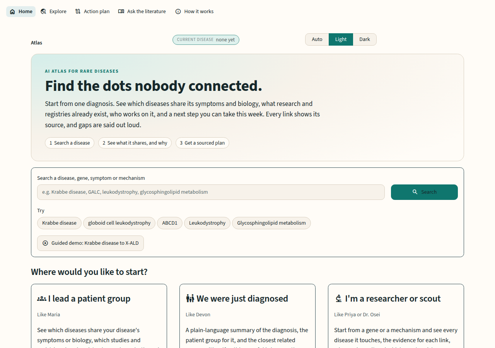
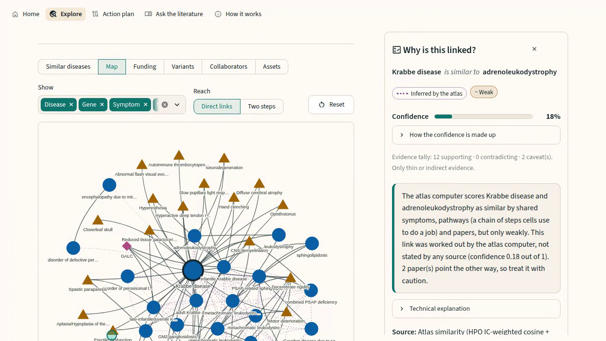
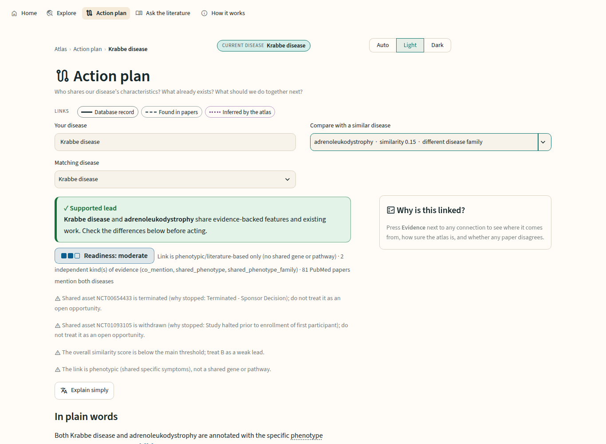
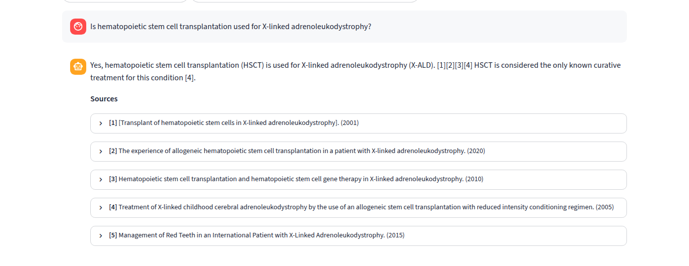

Rare Disease
AI Atlas
Find the dots nobody connected.
A knowledge graph that takes a patient group from one diagnosis to related diseases, existing research, the people working on it, and a next step, with the evidence behind every link.
A diagnosis, a gene name, and no next step
Knowledge is scattered
Disease databases, papers, trial registries, grants and patient groups do not talk to each other.
Names hide mechanisms
Diseases are filed by name, so two that share a pathway or symptom pattern look unrelated.
Groups rebuild what exists
Communities spend scarce years and money on registries and study designs another group already has.
One graph, organised by mechanism and symptoms, that ends in an action
Related diseases ranked by rare shared symptoms, shared pathways and papers that mention both, each with a “why”.
Trials, registries, natural-history studies, NIH grants and pathogenic variants, linked to their source.
Researchers and patient groups on both diseases, what differs, a readiness level, next steps and a proposal to send.
Every link carries its evidence
Source, date, confidence and a stance: supported, mixed, weak or unsupported. Possible counter-evidence (stopped trials, retractions, disagreeing databases) sits beside the link.
Honest when there is no route
If nothing is supported, the atlas says so, shows what it searched (with counts), what is missing, and the next question to ask.
Ten public sources, two disease groups
| Source | What it provides | Used |
|---|---|---|
| MONDO | Stable disease IDs, synonyms, hierarchy | 274 diseases |
| HPO | Symptoms per disease, and how rare each symptom is | 2,835 symptoms · 12,866 diseases for rarity |
| Orphanet | Gene–disease links, prevalence, onset, inheritance | 439 genes · 171 with epidemiology |
| Reactome | Biological pathways of each gene (the mechanism) | 1,180 pathways |
| ClinVar | Variants of the atlas genes | 85,989 records · 3,890 pathogenic |
| PubMed + PubTator3 | Abstracts, authors, and the genes and diseases they mention | 26,026 abstracts |
| ClinicalTrials.gov | Trials, registries, natural-history studies, stop reasons | 1,303 studies |
| NIH RePORTER | Grants and principal investigators | 1,779 projects |
| Patient groups | Curated list, every website checked live | 31 verified |
Demo slice: lysosomal storage diseases (184) and peroxisomal diseases (89), bridged by leukodystrophy.
From raw downloads to an evidence-labelled graph
Download
Parallel, resumable, rate-limited downloaders. Filtered to the atlas diseases and genes.
One ID per entity
MONDO cross-references map OMIM, Orphanet and MeSH. Synonyms map to one node.
Typed edges
Each edge stores source, date, confidence and evidence type. Generic pathways removed.
Similarity
Rarity-weighted symptoms 0.5 · shared pathway 0.3 · co-mention 0.2. Louvain clusters.
Confidence
Reliability × recency + corroboration − penalty. Counter-evidence flagged.
Search
bge-small embeddings + BM25 over every abstract, for cited answers.
Four layers, one contract between engine and app
nodes.parquetedges.parquet source · date · confidence · type
FAISS + BM25 indexconfig/atlas.yamlNetworkX in memory
rag/
atlas/api.pyOpen source, CPU only, no API keys
Data and graph
- Python 3.12
- pandas + Parquet (pyarrow)
- NetworkX: paths, Louvain clustering
- scikit-learn: TF-IDF rarity weighting, synonym search
Search and AI
- BAAI bge-small-en-v1.5 embeddings
- BM25 + FAISS, fused by rank
- MiniLM cross-encoder reranker
- Qwen2.5-3B (4-bit) on llama.cpp
Interface
- Streamlit 1.63, multipage
- streamlit-agraph (vis.js) graph map
- Light, dark and auto themes
- Colour-blind-safe: shapes and line styles, not colour alone
Private by default, free to run, reproducible. The LLM client speaks the OpenAI-compatible API, so a hosted model can be swapped in with one setting.
Summary first, evidence on click




Runs on one laptop, reachable from anywhere
Deployment
- Hardware: one CPU laptop (6 cores, no GPU, ~6 GB RAM)
./startlaunches the model server and the app;./stopshuts both down- Always on: tmux session with auto-restart and a health watchdog
- Public access: Cloudflare Tunnel gives an HTTPS link with no open ports
- Reproducible:
run_all.shrebuilds data, graph and index from public sources
Tools used
- Python, Streamlit, llama.cpp
- Playwright: UI tests, screenshots, demo recording
- Streamlit AppTest + stubbed-LLM smoke tests
- ffmpeg: demo video editing and subtitles
- Git and GitHub, tmux, cloudflared
- Claude Code as an AI coding assistant
Speed on the laptop: disease card + neighbours < 0.1 s · action plan ~0.1 s · graph loads in ~6 s · cited literature answer 10–50 s
Measured, honest about limits, built to grow
Known limits
- Researchers without an ORCID matched by name
- Counter-evidence flags are heuristics
- Funding gaps cover the NIH only; two disease groups indexed
Next
- More disease groups: one config entry each
- Patient groups contribute missing evidence, reviewed before it counts
- Shared natural-history studies as the first 10× milestone